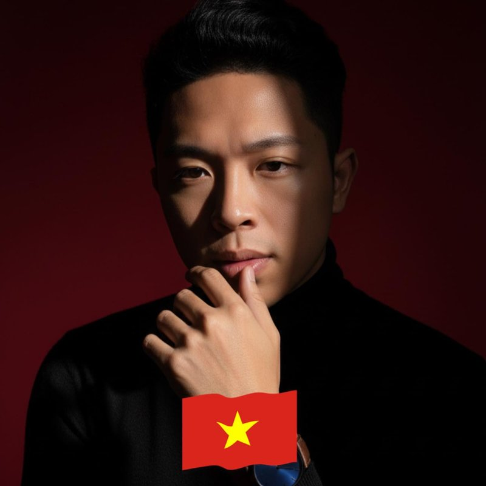

Nguyễn Văn Hưng
The Tao Engineer — kỹ sư của Đạo
22 tuổi rời Việt Nam sang Nhật — 7 năm BrSE trong môi trường công nghệ G7. Chuyển sang Sales để hiểu cách thuyết phục con người. Học thêm Thạc sĩ Luật Kinh tế để hoàn thiện vế bảo vệ doanh nghiệp xuyên biên giới. Quyết định xây HOPE CORP để bắc cầu giữa hệ tri thức Y học Cổ truyền Việt Nam — kế thừa từ Hải Thượng Lãn Ông, Tuệ Tĩnh, Lê Văn Sửu — và công nghệ AI hiện đại, viết tri thức nghìn năm thành code mà thế giới đọc được.
- 🇯🇵 7 năm IT Nhật Bản — BrSE → Tech Lead
- 📈 50K+ Community · $300K Revenue
- ⚖️ Thạc sĩ Luật Kinh tế
- 🌿 Healthcare Founder · Holistic Ecosystem
"I build systems that listen. Where the Tao meets the algorithm."